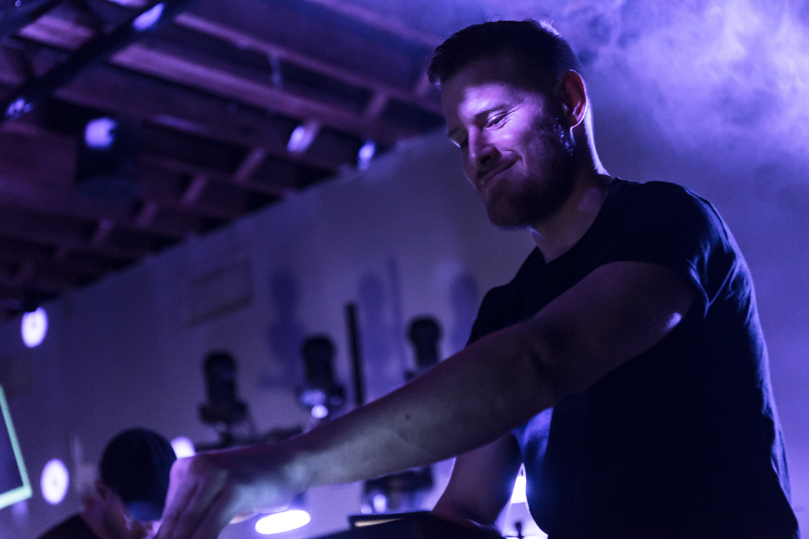
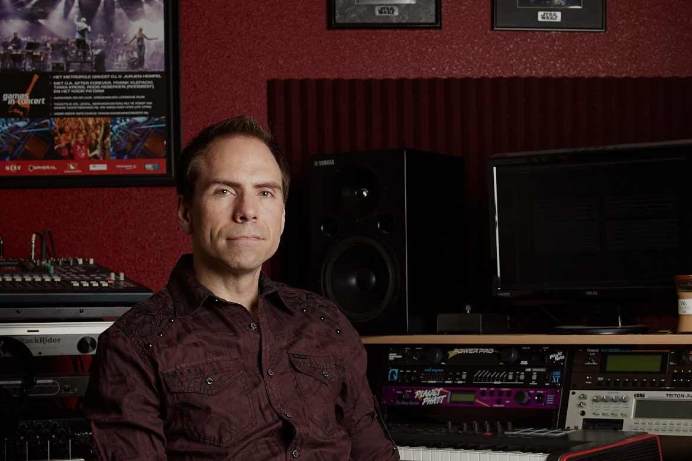
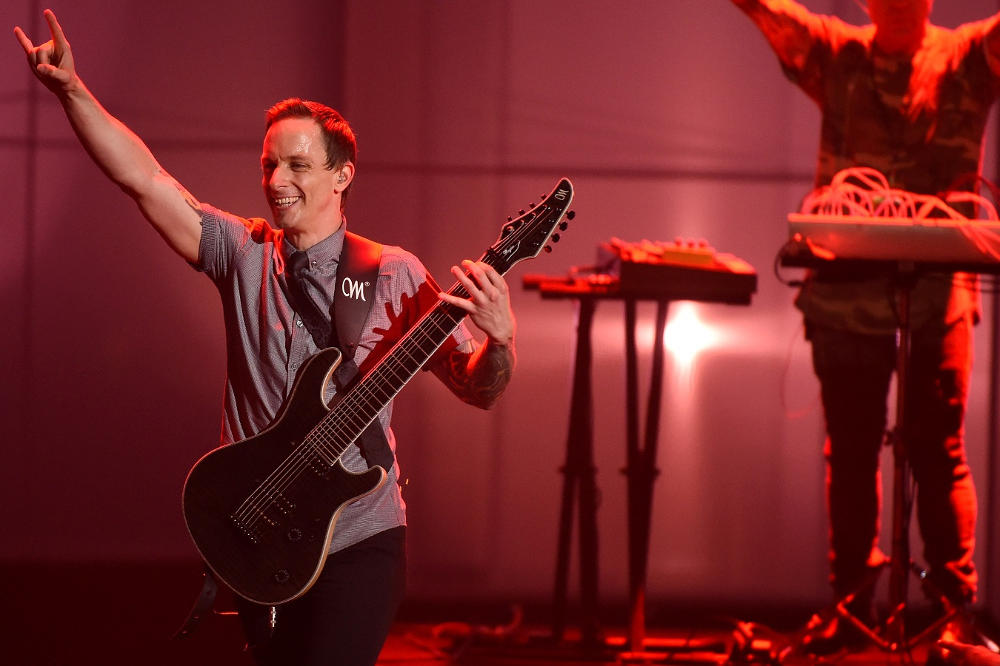
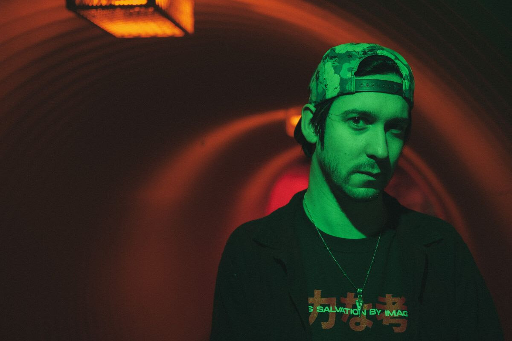
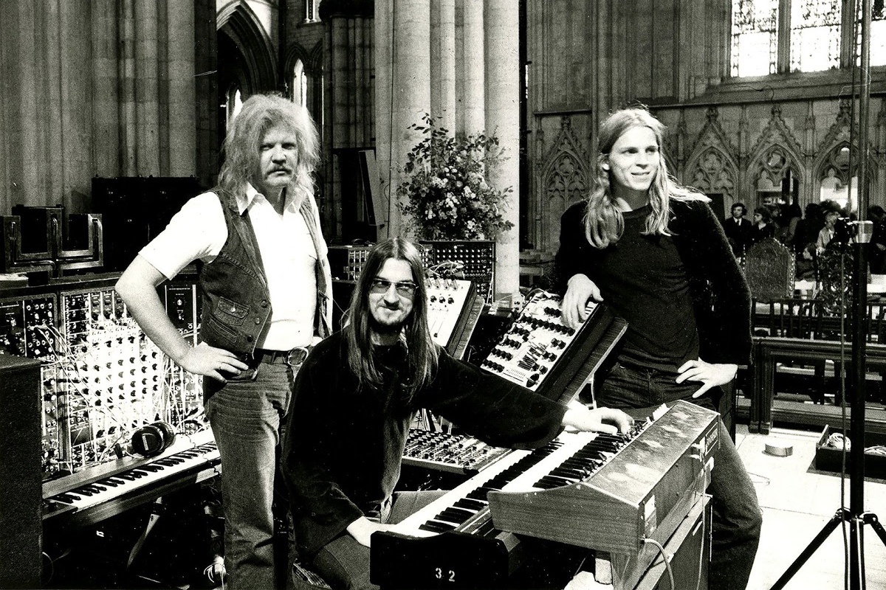

Электронная музыка — музыка, созданная с использованием электромузыкальных инструментов и электронных технологий (с последних десятилетий XX века — компьютерных технологий). Как специфическое направление в мире музыки электронная музыка оформилась во второй половине XX века и к началу XXI века широко распространилась в академической и массовой культуре.
Электронная музыка оперирует звуками, которые способны издавать электронные и электромеханические музыкальные инструменты, а также звуками, возникающими при помощи электрических / электронных устройств и различного рода преобразователей (магнитофоны, генераторы, компьютерные звуковые карты, звукосниматели и тому подобные), которые в строгом смысле не являются музыкальными инструментами.
До последней трети XX века электронная музыка ассоциировалась, главным образом, с экспериментами (как в СССР, так и за рубежом) в академической музыке, но это положение дел изменилось с налаживанием серийного производства синтезаторов звука в 1970-е годы. Синтезаторы благодаря своей умеренной стоимости стали доступны широкой публике. Это изменило образ популярной музыки — синтезаторы стали использовать многие джазовые, рок- и поп-музыканты. В начале XXI века электронная музыка включает в себя широкий спектр стилей и жанров — от единичных экспериментов авангардистов до широко тиражируемой прикладной музыки.

Carpenter Brut
Carpenter Brut — синтвейв-проект французского музыканта Фрэнка Уэзо. Мировую известность приобрёл после выхода игры Hotline Miami 2, в создании саундтрека к которой принял участие. Для музыки Carpenter Brut характерно сильное влияние метала: во многих песнях появляются «живые» ударные и электрогитара. Фрэнк отмечает, что «чистая» электроника не удовлетворила его как недостаточно энергичная, поэтому он позаимствовал некоторые приемы тяжелых жанров. В турах к Фрэнку присоединяются Адриан Гроссет и Флорент Маркадет из французской группы Hacride, играющие на электрогитаре и ударных соответственно.

Frank Klepacki
Фрэнк Клепаки — американский композитор, пишущий саундтреки для видеоигр. Самое сильное влияние в период формирования музыкального стиля на Фрэнка оказали Iron Maiden, AC/DC и Depeche Mode. Недолго поработав бета-тестером в Westwood Studios, он начал писать музыку для игры Eye of the Beholder II. Пожалуй, самые известные работы Фрэнка – саундтреки к серии игр Command & Conquer, особенно композиция Hell March. Также он был звукорежиссером Star Wars: Empire at War. Помимо игровой индустрии, Фрэнк работал в группах Home Cookin', I AM и The Bitters.

Mick Gordon
Мик Гордон — австралийский композитор и саунд-дизайнер, пишущий музыку преимущественно для компьютерных игр. Начал работу на Pandemic Studios, затем работал на MachineGames, id Software, Arkane Studios, Slightly Mad Studios. Среди его работ саундреки для игр из серий Need for Speed, Wolfenstein: The New Order и The Old Blood, Wolfenstein II: The New Colossus, а также Doom, и Doom Eternal. За музыку к Doom Гордон получил ряд наград, в том числе награду церемонии награждения The Game Awards, а также номинировался на Премию Британской Академии в области видеоигр в категории «Лучшая музыка».

Perturbator
Perturbator — синтвейв-проект французского музыканта Джеймса Кента. Мировую известность приобрёл после выхода игры Hotline Miami, в создании саундтрека к которой принял участие. Для музыки Perturbator характерна мрачная атмосфера и жёсткий, по сравнению с иной ретро-музыкой, ритм, что роднит данный проект с метал-группами. Вдохновение для этого проекта Кент черпает из фильмов Джона Карпентера, киберпанка и культуры VHS B-movie. При записи Кент использует аутентичную технику 1980-х годов или их эмуляторы.

Hollywood Burns
Эмерик Левардон – малоизвестный французский электронный музыкант, пишущий музыку в жанре синтвейв. Первый релиз под псевдонимом Hollywood Burns – сингл Californian Nightmare – он выпустил в декабре 2015 года. В августе 2016-го выходит его мини-альбом First Contact EP. Также Эмерик выпустил два полноценных альбома – Invaders (2018) и The Age of the Saucers (2021).

Tangerine Dream
Tangerine Dream — немецкий музыкальный коллектив, один из пионеров электронной музыки и краут-рока, основатель и лидер Берлинской школы электронной музыки. Образован в 1967 году Эдгаром Фрёзе. Состав группы часто изменялся, в ранний период в нее входил барабанщик и композитор Клаус Шульце. Наиболее стабильный состав сложился в начале 70-х, когда коллектив состоял из Фрёзе, Кристофера Франке и Петера Бауманна. В 2002 году два альбома Tangerine Dream Phaedra и Rubycon были включены в рейтинг The 25 Most Influential Ambient Albums of All Time.